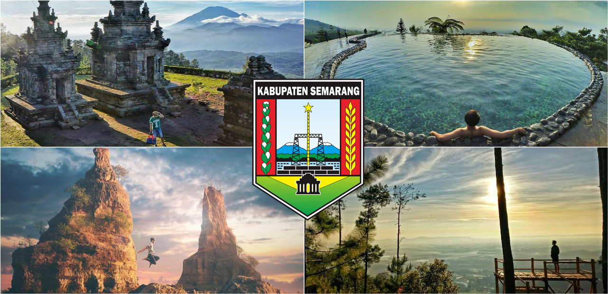

Pembangunan sistem peringatan dini
adalah sebuah wilayah kabupaten yang terletak di Provinsi Jawa Tengah, Indonesia. Ibu kotanya adalah Kota Ungaran.

Kabupaten Semarang, yang terletak di Provinsi Jawa Tengah, Indonesia, merupakan wilayah yang memiliki kekayaan alam yang melimpah, dengan daerah pegunungan, hutan, dan lahan pertanian yang subur. Namun, keberadaan kondisi geografis dan cuaca yang ekstrem juga membuat wilayah ini rawan terhadap berbagai bencana alam. Beberapa jenis bencana alam yang sering terjadi di Kabupaten Semarang antara lain kebakaran, tanah longsor, dan angin puting beliung.
Kebakaran hutan dan lahan sering terjadi terutama pada musim kemarau. Aktivitas pembukaan lahan untuk pertanian yang tidak terkendali serta kelalaian manusia dalam membuang sampah dapat menyebabkan kebakaran yang meluas. Kebakaran ini tidak hanya merusak lingkungan, tetapi juga mengancam kesehatan masyarakat akibat polusi udara dan asap yang ditimbulkannya.
Tanah longsor menjadi ancaman besar di daerah pegunungan dan perbukitan Kabupaten Semarang. Curah hujan yang tinggi dan kondisi tanah yang labil menjadi faktor utama penyebab terjadinya longsor. Tanah longsor dapat menutup jalan, merusak infrastruktur, serta menimbulkan korban jiwa, terutama di daerah yang padat penduduk dan rawan longsor.
Selain itu, angin puting beliung juga sering melanda Kabupaten Semarang, terutama saat musim hujan atau saat terjadinya perubahan suhu yang drastis. Angin puting beliung dapat menyebabkan kerusakan hebat pada bangunan, infrastruktur, dan pohon-pohon yang ada di sekitarnya. Kejadian ini seringkali mengancam keselamatan jiwa masyarakat yang tinggal di daerah terbuka atau dekat dengan pohon besar.